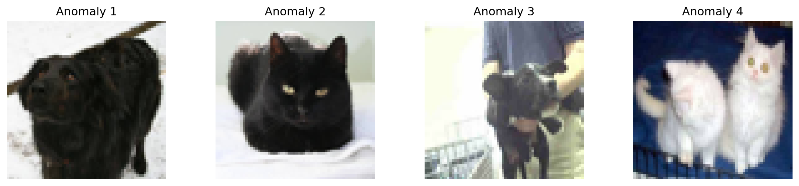

Code
import numpy as np
import matplotlib.pyplot as plt
from sklearn.ensemble import IsolationForest
from datasets import load_dataset
from PIL import Image
# Load the dataset
dataset = load_dataset('Bingsu/Cat_and_Dog') Anomalies are defined as events that deviate from the standard; they occur rarely and do not follow the established pattern.
In machine learning, anomaly detection, also known as outlier detection, is the identification of rare data points which raise suspicions by differing significantly from the majority of the data. Anomalies can be indicative of issues such as bank fraud, structural defects, medical problems, or errors in a text.
Examples of anomalies include:
Large dips and spikes in the stock market due to world events Defective items in a factory/on a conveyor belt Contaminated samples in a lab
Identifying unusual patterns that might indicate fraudulent activity Detecting anomalies in patient data that could indicate medical issues
Unsupervised vs Supervised Detection:
Unsupervised Detection: Most common in anomaly detection. Techniques include autoencoders and clustering algorithms, for scenario when the nature of anomalies is not known a priori.
Supervised Detection: Classification models can be trained to detect anomalies with labeled data. It’s is not a recommended for real-world data is more noisy and human can miss some aspects of data when labeling it.
Semi-supervised Learning: Involves training on a large amount of unlabeled data and a small amount of labeled data.
Anomaly detection in computer vision focuses on identifying abnormal patterns or objects in visual data that do not conform to expected norms.

import numpy as np
import matplotlib.pyplot as plt
from sklearn.ensemble import IsolationForest
from datasets import load_dataset
from PIL import Image
# Load the dataset
dataset = load_dataset('Bingsu/Cat_and_Dog') Preprocess the dataset to get
from datasets import concatenate_datasets
data = dataset['train']
cats = data.filter(lambda x: x['labels']==0)
dogs = data.filter(lambda x: x['labels']==1)
data = concatenate_datasets([cats.shuffle(seed=1).select(range(100)), dogs.shuffle(seed=0).select(range(900))])
data = data.shuffle(seed=0)def preprocess_image(image):
# convert the input image to grayscale
#image = image.convert('L')
image = image.resize((64, 64)) # Resize to 64x64
return np.array(image).flatten() # Flatten the image
# Preprocess the images
images = np.array([preprocess_image(item['image']) for item in data])# Applying Isolation Forest
iso_forest = IsolationForest(n_estimators=100, contamination=0.1) # contamination is an estimate of the proportion of outliers
anomalies = iso_forest.fit_predict(images)
# Identifying the indices of anomalies
anomaly_indices = np.where(anomalies == -1)[0]
# Plot some of the detected anomalies
fig, axs = plt.subplots(1, 5, figsize=(15, 3))
for i, idx in enumerate(anomaly_indices[:5]):
axs[i].imshow(images[idx].reshape(64, 64,3), cmap='gray')
axs[i].axis('off')
axs[i].set_title(f'Anomaly {i+1}')
plt.show()